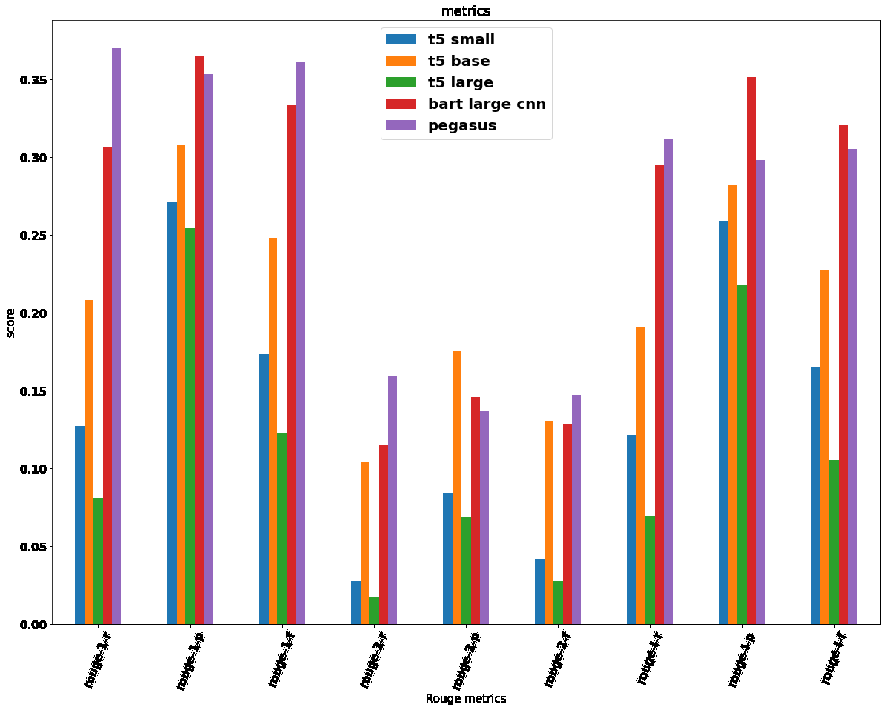

Comparing T5, BART, and PEGASUS for summarizing medical research documents that lack their own abstracts.
Medical researchers are exposed to enormous amounts of medical information in the form of medical news, clinical trial reports, research articles, etc. Researchers would need the documents' summaries that help them decide to do an in-depth study. Even though there are documents that contain abstracts, a lot of medical documents do not contain abstracts or summaries. The best solution to address this issue is abstractive text summarization.
Extracting useful information and summarizing the information from medical documents inclined to the best interests of the user is a challenge that is addressed in this study. For this, several abstractive summarization techniques such as T5, BART, and PEGASUS are used, and based on ROUGE metrics, PEGASUS is identified to perform better than the other models, achieving the highest ROUGE score of 0.37.
All models are evaluated on documents from the SUMPUBMED dataset (derived from PubMed, 32,689 text documents), and scored with ROUGE-1, ROUGE-2, and ROUGE-L (recall, precision, and F1 for each).
Text-to-Text Transfer Transformer; frames every NLP task, including summarization, as text-to-text. Evaluated at small, base, and large sizes.
Bidirectional Auto-Regressive Transformer, trained as a denoising autoencoder to reconstruct original text from a corrupted version.
Masks whole sentences (selected deterministically, not randomly) and generates them as the output — pre-training that mirrors the summarization task itself.
PEGASUS leads on most ROUGE-1, ROUGE-2, and ROUGE-L recall/F1 metrics; BART is close behind and wins on several precision metrics.

ROUGE-1 scores across models. Bold indicates the best result.
| Model | ROUGE-1 Recall↑ | ROUGE-1 Precision↑ | ROUGE-1 F1↑ |
|---|---|---|---|
| T5 small | 0.127 | 0.272 | 0.173 |
| T5 base | 0.208 | 0.308 | 0.248 |
| T5 large | 0.081 | 0.255 | 0.123 |
| BART large CNN | 0.306 | 0.365 | 0.333 |
| PEGASUS | 0.370 | 0.354 | 0.362 |
PEGASUS achieves the highest ROUGE-1 recall (0.37) and F1 (0.36); BART narrowly leads on precision (0.365). The pattern holds across ROUGE-2 and ROUGE-L: PEGASUS and BART are consistently the strongest of the five, with the three T5 sizes trailing.